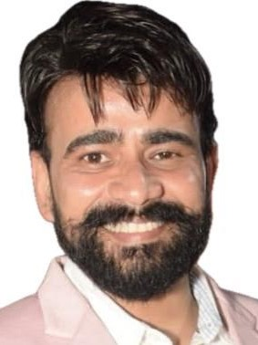

Resume
Pratyush Kumar Jha

SUMMARY:
Pursue leadership roles in Business Analytics, Business Development, and Customer Success
Management in the Gaming and Travel industries, leveraging expertise in customer service,
process management, and training & development
PROFILE SUMMARY
- Demonstrating nearly 09 years of expertise in customer service, process management, and
training & development, with a focus on delivering exceptional results in the RMG & Travel
industry.
- Currently excelling as a CRM Manager at Witzeal Technologies Pvt. Ltd., Gurugram, with a
demonstrated ability to enhance team performance and surpass targets.
- Proficient in designing customized training modules to cultivate a versatile workforce,
leading to improved operational efficiency and performance.
- Secured favourable agreements with vendors, airlines, and foreign agents, leading to
reduced costs and enhanced travel offerings.
- Proficiently strategizing customer retention, analysing data, and formulating engagement
plans to drive business growth through enhanced user retention.
- Proficient in guiding clients on holiday destinations, preparing quotes for travel packages,
and promoting travel offerings through email marketing initiatives.
- Possess extensive expertise in business analytics, market strategy, and customer success
management, driving excellence in domestic and international operations.
KEY HIGHLIGHTS ACROSS THE CAREER
- Accomplished a considerable increase in customer retention at Witzeal Technologies Pvt.
Ltd., showcasing the effectiveness of implemented strategies.
- Implemented a comprehensive customer feedback system, resulting in an increase in
customer satisfaction levels, as evidenced by positive feedback and increased customer
retention.
- Introduced and led a cross-functional collaboration initiative, fostering cooperation among
departments and optimizing business processes, resulting in a remarkable improvement in
operational efficiency and cost savings.
- Spearheaded a customer service training program, resulting in an improvement in customer
service ratings and a decrease in customer complaints, contributing to enhanced customer
satisfaction and loyalty
EDUCATION
- Graduated from Kashi Vidya Peeth, Varanasi - 2023
- Intermediate from UP Board - 2007
- Metriculation from CBSE Board - 2005
WORK EXPERIENCE
- Jun'23 Till Present: Witzeal Technologies Pvt. Ltd., Gurugram as a CRM Manager
- Dec'21-May'23: SparSkills Technologies Pvt. Ltd., New Delhi as a CRM Manager
- Dec'18 - Nov'21: Happy Easy Go India Pvt. Ltd., Gurugram as a Team Leader
- May'2015 - Nov'18: Interglobe technologies Pvt. Ltd., Gurugram as a Team Leader
KEY RESULT AREAS
- Team Building and Leadership: Identified and implemented strategies to enhance team effectiveness and foster cooperation among team
members. Formulated and communicated Key Result Areas (KRAs) for team members, guiding them towards goal achievement.
- Performance Monitoring and Target Achievement: Planned and monitored daily, weekly, and monthly targets, ensuring adherence to
preset standards and achieving overall objectives
- Employee Development and Training: Created and sustained a developmental environment to motivate employees and enhance
performance levels. Developed need-based training modules to cultivate a multi-skilled workforce for efficient cross-utilization within subprocesses.
- Customer Service and Support: Ensured availability of travel-related documents, assessed customer needs, and provided assistance and
information on product features. Educated clients about holiday destinations, provided quotes for holiday packages, and marketed travel
packages via email.
- Stakeholder Management: Liaised with internal and external stakeholders, assessed requirements, and worked towards achieving
objectives. Coordinated operations related to relationships with travel agencies and vendors, negotiated contracts, and managed
reimbursements.
- Vendor Negotiation and Cost Management: Negotiated with vendors, airlines, & foreign agents for better rates, achieving cost savings
through cancellation and amendments of ticket issuance. Coordinated with international vendors for group bookings, ensuring adherence
to travel SOPs and preparing cost sheets and itineraries.
- Business Analyst (BA): Conducted in-depth analysis of market trends, customer behavior, and competitor activities to identify growth
opportunities. Collaborated with cross-functional teams to gather and analyze business requirements, translating them into actionable
insights and solutions
- Business Head: Developed and executed strategic business plans aligned with organizational objectives, driving revenue growth and market
expansion. Established and maintained relationships with key stakeholders, fostering partnerships and enhancing brand reputation.
- Customer Success Manager: Onboarded new customers, conducting comprehensive needs assessments and developing tailored success
plans to ensure customer satisfaction and retention. Acted as the primary point of contact for customer inquiries, issues, and escalations,
providing timely resolution and support. Conducted regular check-ins with customers to assess usage, address concerns, and identify
opportunities for value-added services. Analyzed customer engagement and adoption metrics, identifying trends and opportunities to
improve customer satisfaction and loyalty.
- Retention Head: Developed and implemented retention strategies to minimize customer churn and maximize lifetime value. Analyzed
customer data and behavior patterns to identify at-risk accounts, implementing targeted interventions and retention campaigns.
HOBBIES
- Playing Chess
- Cooking
- Playing Keyboard